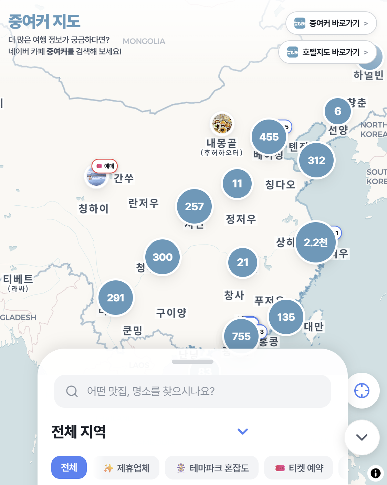
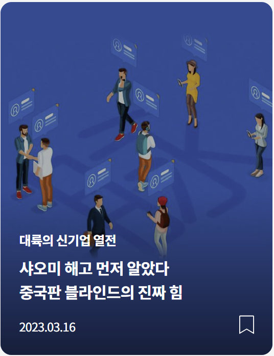
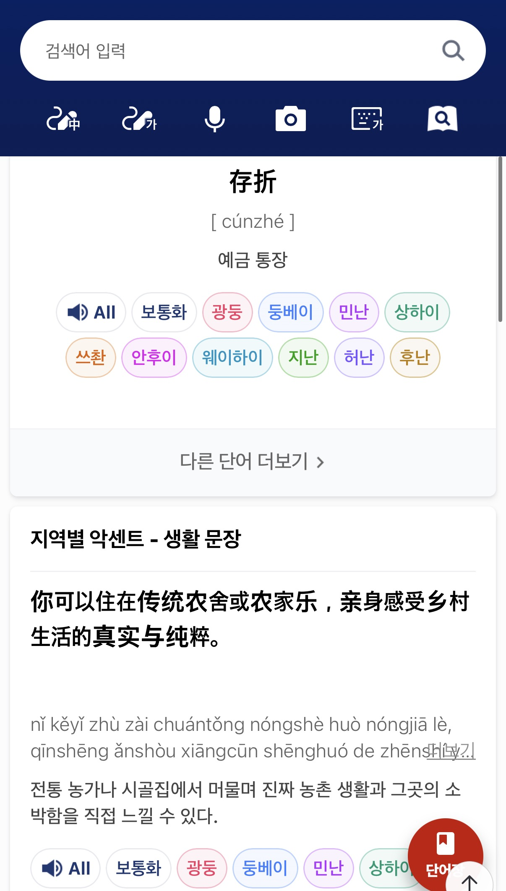
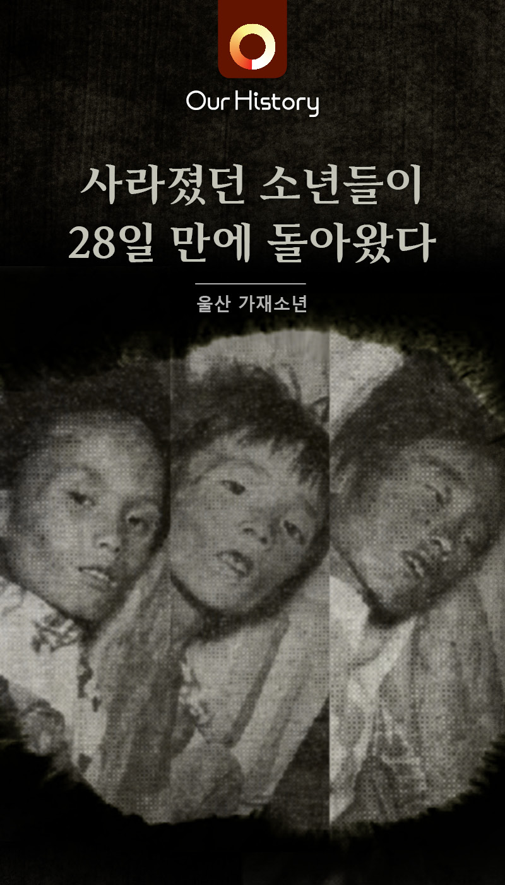

Brand Copywriter
×
Content Director
01
이름을 짓고, 7만 명을 모으고, 매출을 만들기까지
중여커 커뮤니티 · 2024.11 – 현재
'중여커' 네이밍·상표등록·커뮤니티 빌딩 74,468명

02
불편함을 해소한 직관적인 서비스
중여커 지도 · 2026 런칭
서비스 기획 · IA · 표기 기준

03
기사 쓰기를 넘어, 클릭하게 만들기
차이나랩 · 2017 – 2022
취재 · 기사 작성 · 유료 구독 콘텐츠

04
5년 연속, 네이버 콘텐츠 프로젝트 완수
네이버 콘텐츠 프로젝트 · 연 1만 건 이상
기획 · 운영 · QA

05
제목 하나로 조회수 3배
네이버 메인 중국 주제판 · 2017 – 2022
편성 · 헤드라인 · 지표 분석

06
한 문장으로 51만 명을 멈춰 세우다
카드뉴스 · Our History · 406만 읽음
기획 · 카피 · 발행
01 / 06
콘텐츠로
브랜드의 성장을 이끕니다
브랜드 카피라이터 · 콘텐츠 디렉터 · 커뮤니케이션 리더
중앙일보·네이버 JV 차이나랩 뉴스제작팀장
KEYWORD
10년 6개월
총 경력 · 차이나랩 뉴스제작팀장
74,468명
'중여커' 네이밍·상표등록·커뮤니티 빌딩
325,000건 이상
사전 DB 표기 규칙·거버넌스 총괄
경력
2015 — 현재
2015 – 2017
중앙일보
창간 50주년 TF팀 인턴
모바일서비스팀 사원
2017 – 2022
차이나랩
중앙일보·네이버 JV
에디터
CP
네이버 메인 중국 주제판 편성
2023 – 현재
LEAD
차이나랩
NOW
뉴스제작팀장
프로젝트 총괄
서비스 기획
브랜딩
문장을 쓰는 사람에서 기준을 만드는 사람으로
10년, 콘텐츠 제작에서 서비스와 브랜드를 만드는 사람으로 진화했습니다.
01
2015–2017 · 인턴·사원
직접 씁니다.
중앙일보 창간 50주년 TF팀 인턴으로 시작해 모바일서비스팀에서 'Our History' 콘텐츠를 제작했습니다. 취재, 기사 작성, 디자이너와의 편집 커뮤니케이션, 매체별 리라이팅을 했습니다.
02
2017–2022 · 차이나랩 에디터·CP
매일 검증받고, 먼저 제안합니다.
네이버 메인 주제판(중국) 편성 담당자로 시간대별 잘 팔리는 콘텐츠를 연구하고, 타겟 유저의 흥미와 라이프스타일에 맞는 콘텐츠를 제안했습니다. 23글자 헤드라인과 썸네일의 A/B 테스트를 통해 실시간으로 지표 변화를 체감하며 '잘 팔리는 콘텐츠', '눈을 사로 잡는 카피'에 대한 암묵지를 쌓았습니다.
03
2023–현재 · 뉴스제작팀장
기준을 만듭니다.
프로젝트 수주와 제안서 작성, 업무 플로우 설계, 템플릿과 표기 원칙을 수립합니다. 2023년(AI가 없던 시기)에는 코딩 기술자를 섭외해 업무 자동화를 구축하고 소요시간을 60%이상 단축했습니다. 운영 중인 서비스의 브랜딩을 위해 톤앤매너 확립, 디자인 일관성 구축, 사업처 발굴, 제휴제안 등 '돈 버는 플랫폼'으로 키워가고 있습니다.
프로젝트별 업무 방식을 0에서부터 구축하고 업무 플로우를 설계할 수 있습니다.
WHAT I DO
언론사 인턴으로 시작해 기사작성, 콘텐츠 기획, 콘텐츠 비즈니스 프로젝트 총괄, 브랜드 네이밍, 서비스 기획까지 본인 기여도가 80% 이상인 대표 프로젝트
불편함을 해소한 직관적인 서비스
중국 여행을 앞둔 한국인 커뮤니티의 버티컬 서비스 '중여커 지도' 분류 체계와 표기 기준을 세우고 서비스를 직접 기획했습니다.
서비스 기획IA표기 기준
상세 보기
한 문장으로 51만 명을 멈춰 세우다
중앙일보 'Our History' 카드뉴스를 발제부터 제목·본문까지 직접 구성했습니다. 플랫폼 특성에 맞게 리라이팅해 콘텐츠 바이럴을 주도했습니다.
카드뉴스발제바이럴
상세 보기
본인 기여도 80% 이상인 대표 프로젝트 6건
WHAT I CAN
페인 포인트를 발견해 서비스로 만들고, 병목 현상을 해결하며 프로젝트의 시작부터 끝을 책임졌습니다
브랜드 커뮤니케이션 전략
중국 무비자 시행 18일 만에 커뮤니티 개설을 제안·런칭, 21개월 만에 회원 73,600명을 달성했습니다.
브랜드 메시지 개발과 관리
커뮤니티·연재·서비스의 정체성 문장과 톤을 설계하고, 팀원과 외부 필진이 함께 쓰는 환경에서 일관되게 유지했습니다.
브랜드 스토리 개발
기업·도시·음식이라는 무형의 대상을 읽히는 이야기로 전환하고 '대륙의 신기업 열전' 등 유료 구독 콘텐츠로 판매되는 수준까지 검증했습니다.
플랫폼·브랜드 네이밍
커뮤니티·앱·연재 시리즈 등 다양한 형태의 콘텐츠를 제작했고, 편성 전략 및 카피라이팅 개선으로 UB 18만 → 23만까지 올렸습니다.
카피 검수와 가이드 운영
32만 5,000건 규모 사전 콘텐츠의 표기 기준을 수립하고 검수까지 이어지는 워크 플로우를 세팅했습니다. 외부 필진 원고의 교열 등 일관된 톤앤매너를 구축해왔습니다.
성과 측정과 개선
유입 경로·키워드 로그로 이탈 지점을 특정하고 콘텐츠·기능·제휴로 해소하는 절차를 21개월간 반복했습니다. 네이버 메인 주제판 운영으로 A/B 테스트를 500건 이상 했고 카피와 썸네일은 클릭률·도달률로 검증했습니다.
기획자디자이너개발자외부필진비즈니스플랫폼사(네이버)
— 콘텐츠 팀 리더로 다직군 프로젝트를 리드했습니다
오너십을 갖고 모든 업무에 임합니다.
새로운 업무는 '배운다', 늘 하던 업무는 '완성도를 높인다'는 애티튜드로 일합니다.
브랜드 카피라이팅브랜드 커뮤니케이션 전략PR대규모 콘텐츠 디렉팅기사 작성
lsseys1991@gmail.com
010-9299-4971